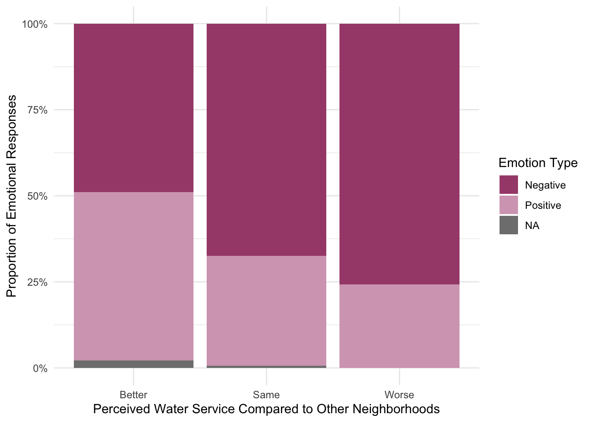

UROP_Lauren
2025-07-20
Last updated: 2025-07-30
Checks: 6 1
Knit directory: QUAIL-Mex/
This reproducible R Markdown analysis was created with workflowr (version 1.7.1). The Checks tab describes the reproducibility checks that were applied when the results were created. The Past versions tab lists the development history.
The R Markdown file has unstaged changes. To know which version of
the R Markdown file created these results, you’ll want to first commit
it to the Git repo. If you’re still working on the analysis, you can
ignore this warning. When you’re finished, you can run
wflow_publish to commit the R Markdown file and build the
HTML.
Great job! The global environment was empty. Objects defined in the global environment can affect the analysis in your R Markdown file in unknown ways. For reproduciblity it’s best to always run the code in an empty environment.
The command set.seed(20241009) was run prior to running
the code in the R Markdown file. Setting a seed ensures that any results
that rely on randomness, e.g. subsampling or permutations, are
reproducible.
Great job! Recording the operating system, R version, and package versions is critical for reproducibility.
Nice! There were no cached chunks for this analysis, so you can be confident that you successfully produced the results during this run.
Great job! Using relative paths to the files within your workflowr project makes it easier to run your code on other machines.
Great! You are using Git for version control. Tracking code development and connecting the code version to the results is critical for reproducibility.
The results in this page were generated with repository version 3edf4ae. See the Past versions tab to see a history of the changes made to the R Markdown and HTML files.
Note that you need to be careful to ensure that all relevant files for
the analysis have been committed to Git prior to generating the results
(you can use wflow_publish or
wflow_git_commit). workflowr only checks the R Markdown
file, but you know if there are other scripts or data files that it
depends on. Below is the status of the Git repository when the results
were generated:
Ignored files:
Ignored: .DS_Store
Ignored: .RData
Ignored: .Rhistory
Ignored: .Rproj.user/
Ignored: analysis/.DS_Store
Ignored: analysis/.RData
Ignored: analysis/.Rhistory
Ignored: analysis/HLTH_counts_by_SES.png
Ignored: analysis/Hrs_by_HWISE score.png
Ignored: analysis/figure/
Ignored: analysis/odds_ratio_plot.png
Ignored: analysis/stacked_barplot.png
Ignored: code/.DS_Store
Ignored: data/.DS_Store
Unstaged changes:
Modified: analysis/UROP_Lauren.Rmd
Modified: odds_ratio_plot.png
Modified: violin_plot.png
Note that any generated files, e.g. HTML, png, CSS, etc., are not included in this status report because it is ok for generated content to have uncommitted changes.
These are the previous versions of the repository in which changes were
made to the R Markdown (analysis/UROP_Lauren.Rmd) and HTML
(docs/UROP_Lauren.html) files. If you’ve configured a
remote Git repository (see ?wflow_git_remote), click on the
hyperlinks in the table below to view the files as they were in that
past version.
| File | Version | Author | Date | Message |
|---|---|---|---|---|
| Rmd | 3edf4ae | Paloma | 2025-07-28 | upd lauren |
| html | 3edf4ae | Paloma | 2025-07-28 | upd lauren |
| Rmd | af42e2a | Paloma | 2025-07-22 | upd |
| Rmd | 822b935 | Paloma | 2025-07-21 | set up analysis |
| html | 822b935 | Paloma | 2025-07-21 | set up analysis |
Introduction
Research question: Is there a relationship between perceived water insecurity (HWISE score) and emotional response to water conditions?
Hypothesis: A higher perception of household water insecurity predicts more negative emotional responses to household water conditions.
Data:
HWISE (final score)
HWISE individual questions
Q26 (positive/negative emotional response) —> Outcome variable
Q28 (better/worse service)
Q19 (too much/ok time used in water management)
PSS
Covariates:
SES
number of children
household size
how long they have lived in the neighborhood (available?)
Model:
# MX26_EM_HHW_TYPE ~ HW_TOTAL + MX28_WQ_COMP + Q19_CAT + PSS_TOTAL + SES + D_HH_SIZE-SIZE + D_CHLD,
# data = d,
# family = binomial?
# MX26_EM_HHW_TYPE ~ HW1 + HW2 + HW 3 (etc) + MX28_WQ_COMP + Q19_CAT + PSS_TOTAL + SES_SC_Total + D_HH_SIZE + D_CHLD,
# data = d,
# family = binomial?
# MX26_EM_HHW_TYPE: 0 = Positive; 1 = Negative
# MX28_WQ_COMP: 0 = Worse, 1 = Same; 2 = Better
# Q19_CAT: 0 = No; 1 = Somewhat; 1 = YesLoading
# loading data set
d <- read.csv("./data/Cleaned_Dataset_Screening_HWISE_PSS_V4.csv")
q19 <- read.csv("./data/Q19.csv")
# Identify the common column for merging
common_column <- "ID"
# Ensure the common column is of the same type in all datasets
d[[common_column]] <- as.character(d[[common_column]])
q19[[common_column]] <- as.character(q19[[common_column]])
# Merge datasets sequentially by the common column
merged_df <- d %>%
full_join(q19, by = common_column)
colnames(merged_df) [1] "ID" "MX8_TRUST" "MX28_WQ_COMP" "MX26_EM_HHW_TYPE"
[5] "D_YRBR" "D_LOC_TIME" "D_AGE" "D_HH_SIZE"
[9] "D_CHLD" "HLTH_SMK" "SES_SC_Total" "SEASON"
[13] "W_WS_LOC" "HW_WORRY" "HW_INTERR" "HW_CLOTHES"
[17] "HW_PLANS" "HW_FOOD" "HW_HANDS" "HW_BODY"
[21] "HW_DRINK" "HW_ANGRY" "HW_SLEEP" "HW_NONE"
[25] "HW_SHAME" "PSS1" "PSS2" "PSS3"
[29] "PSS4" "PSS5" "PSS6" "PSS7"
[33] "PSS8" "PSS9" "PSS10" "PSS11"
[37] "PSS12" "PSS13" "PSS14" "HLTH_CPAIN_CAT"
[41] "HLTH_CDIS_CAT" "HW_TOTAL" "W_WC_WI" "HRS_WEEK"
[45] "PSS_TOTAL" "MX9_DRINK_W" "MX10_WSTORAGE" "Q19"
[49] "Q19_ENG" "Q19_CAT" df <- merged_df
# Q19_CAT: 0 = No; 1 = Somewhat; 2 = Yes; Other = NA
merged_df <- df %>%
filter(!is.na(Q19_CAT)) %>%
mutate(Q19_CAT = case_when(
Q19_CAT == "No" ~ "0",
Q19_CAT == "Somewhat" ~ "1",
Q19_CAT == "Yes" ~ "2",
Q19_CAT == "Other" ~ "NA",
Q19_CAT == !is.na(.) ~ "NA", # Assign "other" to all non-missing values
TRUE ~ NA_character_
))
merged_df$Q19_CAT <- as.factor(merged_df$Q19_CAT)
# MX28_WQ_COMP: 0 = Worse, 1 = Same; 2 = Better
df <- df %>%
filter(!is.na(MX28_WQ_COMP)) %>%
mutate(MX28_WQ_COMP = case_when(
MX28_WQ_COMP == "0" ~ "Worse",
MX28_WQ_COMP == "1" ~ "Same",
MX28_WQ_COMP == "2" ~ "Better",
MX28_WQ_COMP == !is.na(.) ~ "Other", # Assign "other" to all non-missing values
TRUE ~ NA_character_
))
# MX26_EM_HHW_TYPE: 0 = Positive; 1 = Negative
df <- df %>%
filter(!is.na(MX26_EM_HHW_TYPE)) %>%
mutate(MX26_EM_HHW_TYPE = case_when(
MX26_EM_HHW_TYPE == "0" ~ "Positive",
MX26_EM_HHW_TYPE == "1" ~ "Negative",
MX26_EM_HHW_TYPE == !is.na(.) ~ "Other", # Assign "other" to all non-missing values
TRUE ~ NA_character_
))# Descriptive statistics
# Create summary statistics table
summary_stats <- df %>%
group_by(MX26_EM_HHW_TYPE) %>%
summarise(
n = n(),
mean_ses = mean(SES_SC_Total, na.rm = TRUE),
sd_ses = sd(SES_SC_Total, na.rm = TRUE),
median_ses = median(SES_SC_Total, na.rm = TRUE),
mean_age = mean(D_AGE, na.rm = TRUE),
sd_age = sd(D_AGE, na.rm = TRUE),
median_age = median(D_AGE, na.rm = TRUE),
mean_hwise = mean(HW_TOTAL, na.rm = TRUE),
sd_hwise = sd(HW_TOTAL, na.rm = TRUE),
median_hwise = median(HW_TOTAL, na.rm = TRUE),
mean_pss = mean(PSS_TOTAL, na.rm = TRUE),
sd_pss = sd(PSS_TOTAL, na.rm = TRUE),
median_pss = median(PSS_TOTAL, na.rm = TRUE)
)
# Format and display table
summary_stats %>%
rename(
"Group" = MX26_EM_HHW_TYPE,
"N" = n,
"Mean SES" = mean_ses,
"SD SES" = sd_ses,
"Median SES" = median_ses,
"Mean Age" = mean_age,
"SD Age" = sd_age,
"Median Age" = median_age,
"Mean HWISE" = mean_hwise,
"SD HWISE" = sd_hwise,
"Median HWISE" = median_hwise,
"Mean PSS" = mean_pss,
"SD PSS" = sd_pss,
"Median PSS" = median_pss
) %>%
kable("html", digits = 2, caption = "Descriptive Statistics by Emotion Type") %>%
kable_styling(full_width = FALSE, bootstrap_options = c("striped", "hover", "condensed", "responsive"))| Group | N | Mean SES | SD SES | Median SES | Mean Age | SD Age | Median Age | Mean HWISE | SD HWISE | Median HWISE | Mean PSS | SD PSS | Median PSS |
|---|---|---|---|---|---|---|---|---|---|---|---|---|---|
| Negative | 260 | 131.91 | 46.79 | 129.0 | 32.29 | 7.47 | 32 | 10.25 | 6.16 | 10 | 0.37 | 6.81 | 1.0 |
| Positive | 130 | 134.32 | 41.69 | 130.0 | 31.90 | 7.51 | 32 | 4.85 | 4.15 | 4 | -2.75 | 7.37 | -3.5 |
| NA | 3 | 164.50 | 61.52 | 164.5 | 29.00 | 3.61 | 30 | 2.00 | 2.65 | 1 | -0.33 | 9.61 | -2.0 |
summary_stats <- summary_stats %>%
mutate(MX26_EM_HHW_TYPE = factor(MX26_EM_HHW_TYPE, levels = c("Positive", "Negative", "Other")))# Step 2: Summarize and ensure consistent category labels
summary_stats <- df %>%
group_by(MX26_EM_HHW_TYPE) %>%
summarise(
mean_ses = mean(SES_SC_Total, na.rm = TRUE),
sd_ses = sd(SES_SC_Total, na.rm = TRUE),
mean_age = mean(D_AGE, na.rm = TRUE),
sd_age = sd(D_AGE, na.rm = TRUE),
mean_hwise = mean(HW_TOTAL, na.rm = TRUE),
sd_hwise = sd(HW_TOTAL, na.rm = TRUE),
mean_pss = mean(PSS_TOTAL, na.rm = TRUE),
sd_pss = sd(PSS_TOTAL, na.rm = TRUE)
)
summary_stats# A tibble: 3 × 9
MX26_EM_HHW_TYPE mean_ses sd_ses mean_age sd_age mean_hwise sd_hwise mean_pss
<chr> <dbl> <dbl> <dbl> <dbl> <dbl> <dbl> <dbl>
1 Negative 132. 46.8 32.3 7.47 10.3 6.16 0.371
2 Positive 134. 41.7 31.9 7.51 4.85 4.15 -2.75
3 <NA> 164. 61.5 29 3.61 2 2.65 -0.333
# ℹ 1 more variable: sd_pss <dbl>Emotions and Compared to other neighborhoods
# Save the plot as a high-resolution PNG for a poster
ggsave("violin_plot.png", width = 5, height = 4, dpi = 200)
ggplot(df, aes(x = MX26_EM_HHW_TYPE,
y = HW_TOTAL,
fill = MX26_EM_HHW_TYPE)) +
# geom_jitter(aes(color = MX26_EM_HHW_TYPE),
# size = 1, width = 0.25) +
# Jitter adds individual data points
geom_violin(alpha = 0.6, width = 1) +
geom_boxplot(outlier.shape = 1, alpha = 0.5,
width = 0.15, color = "grey30") + # Boxplot
theme_minimal(base_size = 16) +
labs(x = "Emotional reaction to water service",
y = "HWISE Score (points)") +
theme(axis.text = element_text(size = 14),
plot.title = element_text(size = 14, face = "bold")) +
theme(legend.position = "none") +
scale_fill_manual(values = c("Positive" = "#d5a6bd", "NA" = "#ead1dc", "Negative" = "#a64d79")) Warning: Removed 10 rows containing non-finite outside the scale range
(`stat_ydensity()`).Warning: Removed 10 rows containing non-finite outside the scale range
(`stat_boxplot()`).
| Version | Author | Date |
|---|---|---|
| 3edf4ae | Paloma | 2025-07-28 |
# Option 1
ggplot(df, aes(x = MX26_EM_HHW_TYPE, group = MX28_WQ_COMP, fill = factor(MX28_WQ_COMP))) +
geom_bar(position = "dodge") +
labs(
x = "Emotional reaction to water service",
y = "Count",
fill = "Perception of water service\n(Same or Better than others)"
) +
theme_minimal(base_size = 14) +
scale_fill_manual(values = c("Better" = "seagreen3", "Same" = "lightblue2", "Worse" = "maroon")) +
theme(legend.key.size = unit(0.8, 'cm'))
| Version | Author | Date |
|---|---|---|
| 3edf4ae | Paloma | 2025-07-28 |
# Option 2
ggplot(df, aes(x = MX28_WQ_COMP, group = MX26_EM_HHW_TYPE, fill = factor(MX26_EM_HHW_TYPE))) +
geom_bar(position = "dodge") +
labs(
x = "Perception of water service\n(Same or Better than others)",
y = "Count",
fill = "Emotional reaction to water service"
) +
theme_minimal(base_size = 14) +
scale_fill_manual(values = c("Positive" = "#d5a6bd", "NA" = "#ead1dc", "Negative" = "#a64d79")) +
theme(legend.key.size = unit(0.8, 'cm'))
| Version | Author | Date |
|---|---|---|
| 3edf4ae | Paloma | 2025-07-28 |
# Option 3
df %>%
count(MX28_WQ_COMP, MX26_EM_HHW_TYPE) %>%
group_by(MX28_WQ_COMP) %>%
mutate(Proportion = n / sum(n)) %>%
ggplot(aes(x = MX28_WQ_COMP, y = Proportion, fill = MX26_EM_HHW_TYPE)) +
geom_bar(stat = "identity", position = "fill") +
scale_y_continuous(labels = scales::percent_format()) +
labs(
x = "Perceived Water Service Compared to Other Neighborhoods",
y = "Proportion of Emotional Responses",
fill = "Emotion Type"
) +
theme_minimal() +
scale_fill_manual(values = c("Positive" = "#d5a6bd", "NA" = "#ead1dc", "Negative" = "#a64d79")) 
| Version | Author | Date |
|---|---|---|
| 3edf4ae | Paloma | 2025-07-28 |
Q19
Regression 1
data <- merged_df
# Ensure it's properly coded as 0 or 1
data$MX26_EM_HHW_TYPE <- as.numeric(as.factor(data$MX26_EM_HHW_TYPE)) - 1
# Remove rows where MX26_EM_HHW_TYPE is 2
data <- data %>% filter(MX26_EM_HHW_TYPE != 2)
# Check unique values to confirm only 0 and 1 remain
table(data$MX26_EM_HHW_TYPE)
0 1
129 255 dim(data)[1] 384 50# Ensure it's properly coded as 0 or 1
data$Q19_CAT <- as.numeric(as.factor(data$Q19_CAT)) - 1
# Remove rows where Q19_CAT is 3
data <- data %>% filter(Q19_CAT != 3)
# Check unique values to confirm only 0 and 1 remain
table(data$MX26_EM_HHW_TYPE)
0 1
123 248 dim(data)[1] 371 50# Define dependent (outcome) variable
outcome_var <- "MX26_EM_HHW_TYPE" # Binary outcome (0 = positive, 1 = negative)
# Define independent (predictor) variables
predictors <- c("HRS_WEEK", "MX28_WQ_COMP", "D_CHLD",
"SES_SC_Total", "HW_TOTAL", "D_HH_SIZE", "D_LOC_TIME",
"PSS_TOTAL", "Q19_CAT")
# Run univariate logistic regression for each predictor
univariate_results <- list()
aic_values <- data.frame(Predictor = character(), AIC = numeric(), stringsAsFactors = FALSE)
data <- data %>% drop_na(predictors)Warning: Using an external vector in selections was deprecated in tidyselect 1.1.0.
ℹ Please use `all_of()` or `any_of()` instead.
# Was:
data %>% select(predictors)
# Now:
data %>% select(all_of(predictors))
See <https://tidyselect.r-lib.org/reference/faq-external-vector.html>.
This warning is displayed once every 8 hours.
Call `lifecycle::last_lifecycle_warnings()` to see where this warning was
generated.dim(data)[1] 259 50for (var in predictors) {
# Build formula dynamically
formula <- as.formula(paste(outcome_var, "~", var))
# Fit univariate logistic regression model
model <- glm(formula, data = data, family = binomial)
# Store model summary
univariate_results[[var]] <- summary(model)
# Store AIC values
aic_values <- rbind(aic_values, data.frame(Predictor = var, AIC = AIC(model)))
}
univariate_results$HRS_WEEK
Call:
glm(formula = formula, family = binomial, data = data)
Coefficients:
Estimate Std. Error z value Pr(>|z|)
(Intercept) 1.288006 0.229536 5.611 2.01e-08 ***
HRS_WEEK -0.007004 0.001927 -3.635 0.000278 ***
---
Signif. codes: 0 '***' 0.001 '**' 0.01 '*' 0.05 '.' 0.1 ' ' 1
(Dispersion parameter for binomial family taken to be 1)
Null deviance: 333.29 on 258 degrees of freedom
Residual deviance: 319.66 on 257 degrees of freedom
AIC: 323.66
Number of Fisher Scoring iterations: 4
$MX28_WQ_COMP
Call:
glm(formula = formula, family = binomial, data = data)
Coefficients:
Estimate Std. Error z value Pr(>|z|)
(Intercept) 1.0730 0.2129 5.040 4.66e-07 ***
MX28_WQ_COMP -0.4580 0.1716 -2.669 0.00762 **
---
Signif. codes: 0 '***' 0.001 '**' 0.01 '*' 0.05 '.' 0.1 ' ' 1
(Dispersion parameter for binomial family taken to be 1)
Null deviance: 333.29 on 258 degrees of freedom
Residual deviance: 326.02 on 257 degrees of freedom
AIC: 330.02
Number of Fisher Scoring iterations: 4
$D_CHLD
Call:
glm(formula = formula, family = binomial, data = data)
Coefficients:
Estimate Std. Error z value Pr(>|z|)
(Intercept) 0.3184 0.2364 1.347 0.178
D_CHLD 0.1788 0.1094 1.634 0.102
(Dispersion parameter for binomial family taken to be 1)
Null deviance: 333.29 on 258 degrees of freedom
Residual deviance: 330.56 on 257 degrees of freedom
AIC: 334.56
Number of Fisher Scoring iterations: 4
$SES_SC_Total
Call:
glm(formula = formula, family = binomial, data = data)
Coefficients:
Estimate Std. Error z value Pr(>|z|)
(Intercept) 0.990441 0.411324 2.408 0.016 *
SES_SC_Total -0.002586 0.002920 -0.886 0.376
---
Signif. codes: 0 '***' 0.001 '**' 0.01 '*' 0.05 '.' 0.1 ' ' 1
(Dispersion parameter for binomial family taken to be 1)
Null deviance: 333.29 on 258 degrees of freedom
Residual deviance: 332.50 on 257 degrees of freedom
AIC: 336.5
Number of Fisher Scoring iterations: 4
$HW_TOTAL
Call:
glm(formula = formula, family = binomial, data = data)
Coefficients:
Estimate Std. Error z value Pr(>|z|)
(Intercept) -0.77247 0.24230 -3.188 0.00143 **
HW_TOTAL 0.20194 0.03243 6.228 4.73e-10 ***
---
Signif. codes: 0 '***' 0.001 '**' 0.01 '*' 0.05 '.' 0.1 ' ' 1
(Dispersion parameter for binomial family taken to be 1)
Null deviance: 333.29 on 258 degrees of freedom
Residual deviance: 277.46 on 257 degrees of freedom
AIC: 281.46
Number of Fisher Scoring iterations: 5
$D_HH_SIZE
Call:
glm(formula = formula, family = binomial, data = data)
Coefficients:
Estimate Std. Error z value Pr(>|z|)
(Intercept) 0.46295 0.25036 1.849 0.0644 .
D_HH_SIZE 0.03373 0.03969 0.850 0.3955
---
Signif. codes: 0 '***' 0.001 '**' 0.01 '*' 0.05 '.' 0.1 ' ' 1
(Dispersion parameter for binomial family taken to be 1)
Null deviance: 333.29 on 258 degrees of freedom
Residual deviance: 332.50 on 257 degrees of freedom
AIC: 336.5
Number of Fisher Scoring iterations: 4
$D_LOC_TIME
Call:
glm(formula = formula, family = binomial, data = data)
Coefficients:
Estimate Std. Error z value Pr(>|z|)
(Intercept) 0.832422 0.292667 2.844 0.00445 **
D_LOC_TIME -0.008212 0.011517 -0.713 0.47582
---
Signif. codes: 0 '***' 0.001 '**' 0.01 '*' 0.05 '.' 0.1 ' ' 1
(Dispersion parameter for binomial family taken to be 1)
Null deviance: 333.29 on 258 degrees of freedom
Residual deviance: 332.78 on 257 degrees of freedom
AIC: 336.78
Number of Fisher Scoring iterations: 4
$PSS_TOTAL
Call:
glm(formula = formula, family = binomial, data = data)
Coefficients:
Estimate Std. Error z value Pr(>|z|)
(Intercept) 0.71002 0.13668 5.195 2.05e-07 ***
PSS_TOTAL 0.06132 0.01916 3.201 0.00137 **
---
Signif. codes: 0 '***' 0.001 '**' 0.01 '*' 0.05 '.' 0.1 ' ' 1
(Dispersion parameter for binomial family taken to be 1)
Null deviance: 333.29 on 258 degrees of freedom
Residual deviance: 322.42 on 257 degrees of freedom
AIC: 326.42
Number of Fisher Scoring iterations: 4
$Q19_CAT
Call:
glm(formula = formula, family = binomial, data = data)
Coefficients:
Estimate Std. Error z value Pr(>|z|)
(Intercept) 0.1124 0.1591 0.706 0.48
Q19_CAT 0.8917 0.1741 5.121 3.04e-07 ***
---
Signif. codes: 0 '***' 0.001 '**' 0.01 '*' 0.05 '.' 0.1 ' ' 1
(Dispersion parameter for binomial family taken to be 1)
Null deviance: 333.29 on 258 degrees of freedom
Residual deviance: 301.03 on 257 degrees of freedom
AIC: 305.03
Number of Fisher Scoring iterations: 4# Display AIC values sorted in ascending order (lower AIC = better fit)
aic_values <- aic_values %>% arrange(AIC)
print(aic_values) Predictor AIC
1 HW_TOTAL 281.4608
2 Q19_CAT 305.0278
3 HRS_WEEK 323.6618
4 PSS_TOTAL 326.4195
5 MX28_WQ_COMP 330.0176
6 D_CHLD 334.5640
7 D_HH_SIZE 336.4972
8 SES_SC_Total 336.5033
9 D_LOC_TIME 336.7787# Select best predictors based on AIC (top 6 with lowest AIC)
top_predictors <- head(aic_values$Predictor, 6)
# Create multivariable model with top predictors
multivariable_formula <- as.formula(paste(outcome_var, "~", paste(top_predictors, collapse = " + ")))
multivariable_model <- glm(multivariable_formula,
data = data, family = binomial)
# Display summary of multivariable model
summary(multivariable_model)
Call:
glm(formula = multivariable_formula, family = binomial, data = data)
Coefficients:
Estimate Std. Error z value Pr(>|z|)
(Intercept) -0.6077768 0.4927175 -1.234 0.21738
HW_TOTAL 0.1673110 0.0359160 4.658 3.19e-06 ***
Q19_CAT 0.5812443 0.1970759 2.949 0.00318 **
HRS_WEEK -0.0007525 0.0023485 -0.320 0.74865
PSS_TOTAL 0.0643403 0.0227896 2.823 0.00475 **
MX28_WQ_COMP -0.5137504 0.2153513 -2.386 0.01705 *
D_CHLD 0.1932847 0.1296944 1.490 0.13614
---
Signif. codes: 0 '***' 0.001 '**' 0.01 '*' 0.05 '.' 0.1 ' ' 1
(Dispersion parameter for binomial family taken to be 1)
Null deviance: 333.29 on 258 degrees of freedom
Residual deviance: 251.24 on 252 degrees of freedom
AIC: 265.24
Number of Fisher Scoring iterations: 5# Perform stepwise selection to find the best model
optimized_model <- stepAIC(multivariable_model, direction = "both")Start: AIC=265.24
MX26_EM_HHW_TYPE ~ HW_TOTAL + Q19_CAT + HRS_WEEK + PSS_TOTAL +
MX28_WQ_COMP + D_CHLD
Df Deviance AIC
- HRS_WEEK 1 251.35 263.35
<none> 251.24 265.24
- D_CHLD 1 253.50 265.50
- MX28_WQ_COMP 1 257.13 269.13
- PSS_TOTAL 1 259.63 271.63
- Q19_CAT 1 260.58 272.58
- HW_TOTAL 1 277.48 289.48
Step: AIC=263.35
MX26_EM_HHW_TYPE ~ HW_TOTAL + Q19_CAT + PSS_TOTAL + MX28_WQ_COMP +
D_CHLD
Df Deviance AIC
<none> 251.35 263.35
- D_CHLD 1 253.81 263.81
+ HRS_WEEK 1 251.24 265.24
- MX28_WQ_COMP 1 257.62 267.62
- PSS_TOTAL 1 259.81 269.81
- Q19_CAT 1 260.80 270.80
- HW_TOTAL 1 281.04 291.04# Display summary of optimized model
summary(optimized_model)
Call:
glm(formula = MX26_EM_HHW_TYPE ~ HW_TOTAL + Q19_CAT + PSS_TOTAL +
MX28_WQ_COMP + D_CHLD, family = binomial, data = data)
Coefficients:
Estimate Std. Error z value Pr(>|z|)
(Intercept) -0.70124 0.39781 -1.763 0.07794 .
HW_TOTAL 0.17044 0.03467 4.916 8.84e-07 ***
Q19_CAT 0.58439 0.19699 2.967 0.00301 **
PSS_TOTAL 0.06452 0.02276 2.835 0.00458 **
MX28_WQ_COMP -0.52418 0.21297 -2.461 0.01384 *
D_CHLD 0.19979 0.12815 1.559 0.11899
---
Signif. codes: 0 '***' 0.001 '**' 0.01 '*' 0.05 '.' 0.1 ' ' 1
(Dispersion parameter for binomial family taken to be 1)
Null deviance: 333.29 on 258 degrees of freedom
Residual deviance: 251.35 on 253 degrees of freedom
AIC: 263.35
Number of Fisher Scoring iterations: 5The chosen one
# Best model
model1 <- glm(MX26_EM_HHW_TYPE ~ HW_TOTAL + Q19_CAT + PSS_TOTAL + D_CHLD + MX28_WQ_COMP,
family = binomial, data = data)
# Compute Odds Ratios
odds_ratios <- exp(coef(model1))
odds_ratios (Intercept) HW_TOTAL Q19_CAT PSS_TOTAL D_CHLD MX28_WQ_COMP
0.4959717 1.1858214 1.7938973 1.0666491 1.2211473 0.5920384 # Compute Confidence Intervals for ORs
conf_intervals <- exp(confint(model1))Waiting for profiling to be done...# Create a DataFrame for Plotting
odds_df <- data.frame(
Predictor = names(odds_ratios),
OR = odds_ratios,
Lower_CI = conf_intervals[, 1],
Upper_CI = conf_intervals[, 2]
)
# Remove Intercept for Better Visualization
#odds_df <- odds_df[-1, ]
# Print Table of Odds Ratios
print(odds_df) Predictor OR Lower_CI Upper_CI
(Intercept) (Intercept) 0.4959717 0.2247056 1.0753384
HW_TOTAL HW_TOTAL 1.1858214 1.1111061 1.2735002
Q19_CAT Q19_CAT 1.7938973 1.2313595 2.6785313
PSS_TOTAL PSS_TOTAL 1.0666491 1.0210044 1.1167229
D_CHLD D_CHLD 1.2211473 0.9519950 1.5769678
MX28_WQ_COMP MX28_WQ_COMP 0.5920384 0.3862853 0.8931682odds_df$Predictor <- factor(odds_df$Predictor,
levels = c("(Intercept)", "HW_TOTAL",
"PSS_TOTAL", "D_CHLD",
"MX28_WQ_COMP", "Q19_CAT"),
labels = c("Intercept",
"HWISE\nscore",
"Perceived\nStress",
"Number of Children",
"Perception of water service\n(Same or Better than others)",
"Time spent\nwater management"))
# Save the plot as a high-resolution PNG for a poster
ggsave("odds_ratio_plot.png", width = 7, height = 5, dpi = 200)
ggplot(odds_df, aes(x = reorder(Predictor, OR), y = OR)) +
geom_errorbar(aes(ymin = Lower_CI, ymax = Upper_CI), width = 0.2, color = "#d5a6bd") +
geom_point(size = 4, color = "#a64d79") + # Points for ORs
geom_hline(yintercept = 1, linetype = "dashed", color = "#fdbf6f") + # Reference Line at OR = 1
coord_flip() + # Flip for better readability
labs(title = "Odds ratios of having \na negative emotional response",
x = "Predictors",
y = "Odds Ratio (95% CI)") +
theme_minimal() +
theme(
axis.text.y = element_text(size = 14), # Y-axis labels (predictors)
axis.text.x = element_text(size = 14), # X-axis labels (odds ratio values)
axis.title.x = element_text(size = 16, face = "bold"), # X-axis title
axis.title.y = element_text(size = 16, face = "bold"), # Y-axis title
plot.title = element_text(size = 18, face = "bold", hjust = 0.5) # Title (if any)
)
| Version | Author | Date |
|---|---|---|
| 3edf4ae | Paloma | 2025-07-28 |
sessionInfo()R version 4.5.1 (2025-06-13)
Platform: aarch64-apple-darwin20
Running under: macOS Sequoia 15.5
Matrix products: default
BLAS: /Library/Frameworks/R.framework/Versions/4.5-arm64/Resources/lib/libRblas.0.dylib
LAPACK: /Library/Frameworks/R.framework/Versions/4.5-arm64/Resources/lib/libRlapack.dylib; LAPACK version 3.12.1
locale:
[1] en_US.UTF-8/en_US.UTF-8/en_US.UTF-8/C/en_US.UTF-8/en_US.UTF-8
time zone: America/Detroit
tzcode source: internal
attached base packages:
[1] stats graphics grDevices utils datasets methods base
other attached packages:
[1] car_3.1-3 carData_3.0-5 dplyr_1.1.4 broom_1.0.8
[5] MASS_7.3-65 tidyr_1.3.1 patchwork_1.3.1 kableExtra_1.4.0
[9] rcompanion_2.5.0 corrplot_0.95 coin_1.4-3 survival_3.8-3
[13] ggpubr_0.6.1 rstatix_0.7.2 knitr_1.50 ggplot2_3.5.2
loaded via a namespace (and not attached):
[1] gld_2.6.7 sandwich_3.1-1 readxl_1.4.5
[4] rlang_1.1.6 magrittr_2.0.3 git2r_0.36.2
[7] multcomp_1.4-28 matrixStats_1.5.0 e1071_1.7-16
[10] compiler_4.5.1 systemfonts_1.2.3 vctrs_0.6.5
[13] stringr_1.5.1 crayon_1.5.3 pkgconfig_2.0.3
[16] fastmap_1.2.0 backports_1.5.0 labeling_0.4.3
[19] utf8_1.2.4 promises_1.3.2 rmarkdown_2.29
[22] tzdb_0.5.0 haven_2.5.4 ragg_1.4.0
[25] purrr_1.0.4 xfun_0.52 modeltools_0.2-24
[28] cachem_1.1.0 jsonlite_2.0.0 later_1.4.2
[31] parallel_4.5.1 DescTools_0.99.60 R6_2.6.1
[34] bslib_0.9.0 stringi_1.8.7 boot_1.3-31
[37] lmtest_0.9-40 jquerylib_0.1.4 cellranger_1.1.0
[40] Rcpp_1.0.14 zoo_1.8-14 readr_2.1.5
[43] httpuv_1.6.16 Matrix_1.7-3 splines_4.5.1
[46] tidyselect_1.2.1 rstudioapi_0.17.1 abind_1.4-8
[49] yaml_2.3.10 codetools_0.2-20 lattice_0.22-7
[52] tibble_3.2.1 plyr_1.8.9 withr_3.0.2
[55] evaluate_1.0.3 proxy_0.4-27 xml2_1.3.8
[58] pillar_1.10.2 whisker_0.4.1 nortest_1.0-4
[61] stats4_4.5.1 generics_0.1.3 rprojroot_2.0.4
[64] hms_1.1.3 munsell_0.5.1 scales_1.3.0
[67] rootSolve_1.8.2.4 class_7.3-23 glue_1.8.0
[70] lmom_3.2 tools_4.5.1 data.table_1.17.0
[73] ggsignif_0.6.4 forcats_1.0.0 Exact_3.3
[76] fs_1.6.6 mvtnorm_1.3-3 grid_4.5.1
[79] libcoin_1.0-10 colorspace_2.1-1 Formula_1.2-5
[82] cli_3.6.4 textshaping_1.0.0 workflowr_1.7.1
[85] expm_1.0-0 viridisLite_0.4.2 svglite_2.2.1
[88] gtable_0.3.6 sass_0.4.10 digest_0.6.37
[91] TH.data_1.1-3 farver_2.1.2 htmltools_0.5.8.1
[94] lifecycle_1.0.4 httr_1.4.7 multcompView_0.1-10